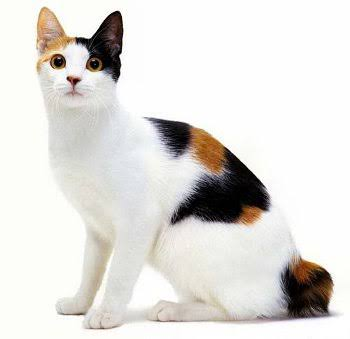
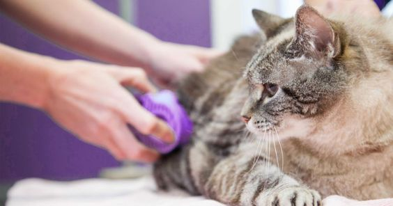

Perawatan Kucing: Tips dan Panduan
Selamat datang di halaman web kami yang membahas perawatan kucing. Kucing adalah hewan peliharaan yang menggemaskan dan setia, namun mereka juga memerlukan perhatian dan perawatan yang baik agar tetap sehat dan bahagia. Di sini, kami akan memberikan panduan dan tips untuk membantu Anda merawat kucing kesayangan Anda dengan baik.
1. Nutrisi yang Seimbang
Nutrisi yang tepat adalah faktor kunci dalam menjaga kesehatan kucing Anda. Pastikan Anda memberikan makanan berkualitas tinggi yang sesuai dengan usia, berat badan, dan kebutuhan kucing Anda. Sebaiknya konsultasikan dengan dokter hewan untuk mendapatkan rekomendasi terbaik tentang jenis makanan yang cocok. Selain itu, pastikan kucing Anda selalu memiliki akses ke air bersih. Hindari memberikan makanan manusia yang berbahaya seperti cokelat, bawang, atau makanan yang mengandung tulang, karena ini dapat membahayakan kucing Anda.
Selain memilih makanan yang tepat, perhatikan porsi makanan dan jadwalnya. Jangan berlebihan dalam memberi makan karena obesitas bisa menjadi masalah serius pada kucing. Baca petunjuk pada kemasan makanan dan pertimbangkan untuk membagi porsi menjadi beberapa kali makan sehari. Ini akan membantu menjaga berat badan ideal kucing Anda. Selalu perhatikan apakah kucing Anda mungkin memiliki alergi makanan atau sensitivitas tertentu, dan jika iya, pertimbangkan untuk beralih ke makanan yang sesuai.
2. Kandang dan Tempat Berlindung
Kucing Anda membutuhkan tempat yang nyaman untuk beristirahat dan merasa aman. Pastikan Anda menyediakan kandang atau tempat tidur yang nyaman untuknya. Pilihan yang luas termasuk kandang terbuka atau tertutup, kasur berbulu, dan bahkan tempat tidur gantung di jendela jika kucing Anda suka melihat keluar. Jika kucing Anda sering bermain di luar, pertimbangkan untuk memberikan tempat berlindung di luar ruangan, seperti rumah kucing, untuk melindunginya dari cuaca buruk. Kandang atau tempat berlindung harus dibersihkan secara teratur untuk menjaga kebersihan dan kenyamanan kucing Anda. Pastikan juga ada tempat yang tenang di dalam rumah yang dapat digunakan kucing untuk merasa aman dan bersantai.
Ingatlah bahwa setiap kucing memiliki preferensi uniknya sendiri, jadi perhatikan bagaimana kucing Anda bereaksi terhadap jenis tempat tidur atau kandang yang Anda sediakan. Beberapa mungkin lebih suka kandang tertutup yang memberikan privasi, sementara yang lain mungkin lebih senang tidur di tempat yang terbuka. Pastikan Anda memberikan variasi dan mengikuti preferensi kucing Anda untuk memastikan kenyamanannya.
3. Kebersihan dan Perawatan Bulu
Merawat bulu kucing adalah elemen penting dalam perawatan mereka. Sisir bulu kucing secara teratur untuk mencegah pembentukan gumpalan bulu dan menjaga bulu tetap bersih. Terutama bagi kucing dengan bulu panjang, perawatan ini sangat penting untuk menghindari perubahan struktur bulu dan mencegah masalah kulit yang mungkin timbul. Selain itu, mandikan kucing Anda sesekali, terutama jika dia terkena kotoran atau bau yang tidak sedap. Gunakan sampo yang dirancang khusus untuk kucing dan pastikan kucing Anda nyaman selama proses mandi. Pastikan juga untuk mengeringkan kucing Anda dengan baik setelah mandi agar dia tidak kedinginan.
Selain merawat bulu secara fisik, perhatikan juga perawatan bulu dari dalam. Pastikan kucing Anda memiliki pola makan yang sehat dan cukup asupan air untuk menjaga bulu tetap mengkilap. Bicarakan dengan dokter hewan tentang suplemen yang mungkin diperlukan untuk mempromosikan kesehatan bulu, seperti asam lemak omega-3. Terakhir, hindari paparan zat-zat beracun yang dapat merusak bulu kucing, seperti produk kimia tumpahan atau tanaman beracun. Dengan merawat bulu kucing dengan baik, Anda dapat memastikan bahwa kucing kesayangan Anda selalu terlihat cantik dan merasa nyaman dalam kulit mereka sendiri.
4. Pemeriksaan Kesehatan Rutin
Pemeriksaan kesehatan rutin adalah komponen penting dari perawatan kucing yang bertujuan untuk menjaga kesehatan mereka. Pertama-tama, pastikan Anda menjadwalkan kunjungan rutin ke dokter hewan setidaknya satu atau dua kali setahun, tergantung pada usia dan kondisi kucing Anda. Selama kunjungan tersebut, dokter hewan akan memeriksa kesehatan umum kucing Anda, melakukan vaksinasi yang diperlukan, dan memberikan perlindungan terhadap parasit seperti cacing dan kutu. Dokter hewan juga akan melakukan pemeriksaan gigi dan membersihkannya jika perlu. Pemeriksaan kesehatan rutin ini adalah peluang baik untuk mendeteksi masalah kesehatan secara dini dan mengambil tindakan yang sesuai.
Selain kunjungan rutin ke dokter hewan, penting juga untuk memantau kesehatan kucing Anda sehari-hari. Amati perubahan perilaku, pola makan, dan tanda-tanda fisik seperti mata atau hidung berair, muntah, atau diare. Jika Anda melihat tanda-tanda ketidaknormalan, segera hubungi dokter hewan untuk mendapatkan saran lebih lanjut. Selalu patuhi jadwal vaksinasi dan pemberian obat cacing yang direkomendasikan oleh dokter hewan Anda. Dengan pemeriksaan kesehatan rutin yang baik, Anda dapat memastikan bahwa kucing Anda tetap sehat dan bahagia sepanjang hidupnya.
5. Lingkungan yang Aman
Menciptakan lingkungan yang aman adalah aspek penting dalam perawatan kucing Anda. Pastikan rumah Anda bebas dari bahaya potensial yang dapat membahayakan kucing Anda. Mulailah dengan menyembunyikan kabel-kabel listrik atau menjaga mereka agar tidak terpapar. Kucing seringkali suka menggigit atau mengunyah kabel, yang dapat mengakibatkan luka bakar atau kejutan listrik. Selain itu, pastikan semua produk kimia dan obat-obatan disimpan dengan aman, jauh dari jangkauan kucing. Pilih tumbuhan hias yang aman dan hindari tanaman beracun, seperti tanaman poinsettia atau lidah mertua, yang dapat berbahaya jika dikonsumsi oleh kucing.
Selain itu, pastikan jendela dan pintu dalam rumah Anda terkunci dengan baik. Kucing bisa menjadi penjelajah yang lihai, jadi pastikan mereka tidak memiliki kesempatan untuk melarikan diri. Jika Anda ingin memberikan akses ke luar ruangan, pertimbangkan untuk memasang pagar atau pagar khusus untuk kucing agar tetap aman dan terlindung dari bahaya luar. Dengan menciptakan lingkungan yang aman, Anda dapat menghindari banyak potensi risiko dan menjaga kucing Anda tetap sehat dan bahagia di rumah.
6. Kasih Sayang dan Perhatian
Kasih sayang dan perhatian adalah elemen yang tak ternilai dalam perawatan kucing Anda. Kucing adalah hewan sosial yang membutuhkan interaksi dengan pemilik mereka. Luangkan waktu untuk bermain, berpelukan, dan berbicara dengan kucing Anda secara teratur. Ini bukan hanya menguatkan ikatan antara Anda dan kucing, tetapi juga memberikan stimulasi mental yang sangat diperlukan untuk kesejahteraan mereka. Cobalah berbagai jenis mainan dan aktivitas untuk menghibur kucing Anda, seperti mainan yang menggelantung, bola berkepala bulu, atau tali. Ajak kucing Anda berinteraksi dalam sesi bermain yang aktif, yang tidak hanya membuatnya bahagia tetapi juga membantu menjaga berat badannya yang sehat.
Selain itu, berikan perhatian khusus saat kucing Anda membutuhkannya. Ini bisa berarti merawat mereka saat mereka sakit, memberikan obat jika diperlukan, atau hanya duduk bersama mereka saat mereka merasa cemas atau ingin bersantai. Juga, jangan lupa memberikan tempat yang nyaman untuk kucing Anda beristirahat dan merasa aman, seperti tempat tidur yang lembut atau selimut. Dengan memberikan kasih sayang dan perhatian y ang cukup, Anda akan membuat kucing Anda merasa dicintai dan dihargai, yang merupakan bagian penting dari perawatan mereka.
Dengan mengikuti panduan dan tips di atas, Anda dapat memastikan bahwa kucing kesayangan Anda akan hidup dengan sehat, bahagia, dan penuh cinta. Jangan lupa untuk selalu mengonsultasikan masalah kesehatan kucing Anda dengan dokter hewan yang berpengalaman.